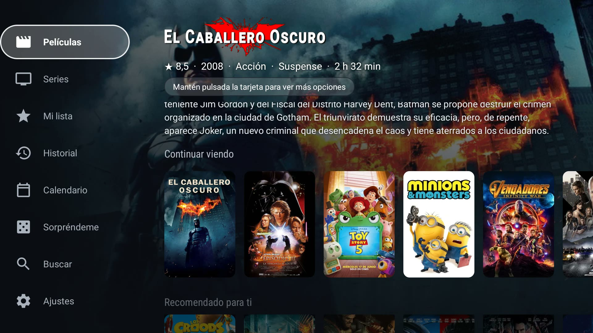

Google TV · Android TV · Fire TV
Press a recommendation.
It opens in your player.
Google TV chooses the app that opens each title. WatchBridge makes it open the one you actually use: Nuvio, Stremio, Plex, Jellyfin and more.
2-day free trial, no card €4.99 once, no subscription Up to 5 TVs
01How it works
Three steps. That's it.
Pick a recommendation on your Google TV home screen. WatchBridge identifies it and opens it in the player you chose.
01
Pick a recommendation
Select a movie or series on your Google TV home screen, as you normally would.
02
WatchBridge identifies it
The title is matched on TMDB. Remakes and same-named sequels are told apart, not guessed.
03
It opens in your player
Opens straight in the app you chose — or shows a "Watch now" button first, if you'd rather confirm.
Technical details & permissions
On Google TV, WatchBridge TV uses Android's Accessibility API narrowly: it only watches for clicks on the launcher's recommendation cards and sees that click's payload — nothing else on screen. Every other click — app icons, menus, anything that isn't a recommendation — is left completely alone. Titles are looked up on TMDB with a bundled key, so there's nothing to set up.
02What it does
Three things, one app
Recommendations
Your recommendations, in your player
Click a card on the Google TV or Fire TV home screen — or ask by voice — and it opens in Nuvio, Stremio, Plex, Jellyfin, WuPlay or Wholphin.
- Remakes and same-named titles are told apart, never guessed
- One player for everything, or one for movies and another for series
- Checks your own Jellyfin or Emby library first, if you want
- Also on Projectivy and Monet launchers
Your media center
A home screen worth opening
Recommended for you, Continue watching, My list, a calendar of next episodes, voice search and a Surprise me button when you can't decide.
- Recommended for you, built from what you actually watch
- Continue watching and My list, in sync with your phone
- A calendar of next episodes and premieres
- A Surprise me button for when you cannot decide

Live TV
A real TV guide for your own IPTV list
Bring the M3U or Xtream list your provider gave you and get a TV-style guide. WatchBridge does not provide or sell channels or lists.
- EPG grid with now and next, plus catch-up up to 48 hours
- Favorites, groups, several lists and a parental PIN
- Two-channel Multiview, recording and live football scores
- Search by typing or by voice: “play La Sexta”
03Compatibility
Works with what you already use
Players
- Nuvio title page or direct play
- Stremio title page
- WuPlay title page
- Plex free catalog titles
- Jellyfin opens a search
- Wholphin Jellyfin client, opens a search
- Arvio title page
- Emby title page if it is in your library
- YouTube SmartTube or TizenTube Cobalt
Devices and launchers
- Google TV Chromecast with Google TV, Sony, TCL, Hisense…
- Fire TV its own mode, no root
- Projectivy own rows + opens other apps’ cards in your player
- Monet own rows + opens other apps’ cards in your player
- Android phone and tablet WatchBridge Mobile
Not affiliated with any of them; the names belong to their owners. Compare the players
04On your phone
Take your recommendations to your phone
WatchBridge Mobile is a companion app for Android phones and tablets — same account, same watch history and recommendations shared with your TV. Browse Movies, Series and My list, and tap a title to open it directly in Nuvio, Stremio, WuPlay, Plex, Jellyfin or Wholphin on your phone.
- Movies, Series, My list and full History — same as on the TV
- Same account: verify once, watch history syncs both ways
- A phone/tablet counts separately from your TVs — doesn't use up a TV device slot
- Found something on your phone? Tap "Send to TV" and it opens there automatically
In closed beta on Google Play — want to be the first to try it? You can also install the APK. Same free trial and one-time payment, verified with the same email.
Join the Google Play beta Download the APK See all the features
05Price
One payment. Not a subscription.
No monthly fee. Pay once and keep it.
€4.99
paid once, yours for good
- Free for 2 days, no card: one trial per email, on up to 3 devices
- Every feature unlocked from the first day
- Up to 5 TVs; your phone or tablet does not take a slot
- No subscription, no monthly fee
On Google Play, buy it with your Google account right from the TV. With the APK, scan the QR code shown in the app and pay with your phone.
06Questions
Questions people ask
Is WatchBridge a streaming service?
No. WatchBridge doesn't provide, host or sell any movies or series. It opens the title in a player app you already use.
Does it replace my Google TV home screen?
No. It works alongside your launcher and only reacts when you click a recommendation card.
Which players does it work with?
Nuvio, Stremio, Plex, Jellyfin, WuPlay, Wholphin and Arvio — plus SmartTube or TizenTube Cobalt for YouTube on Google TV. You can switch any time in Settings.
Does it work on Fire TV?
Yes, through Fire TV mode, with no root. It isn't instant like Google TV: you hold on a card for a couple of seconds and confirm with OK.
Is it on Google Play?
Yes. Install it from Google Play on your Google TV. On Fire TV, which has no Google Play, you install the APK instead — it works the same way.
Does it include TV channels? Which IPTV lists work?
No channels or lists are included — you bring your own. WatchBridge accepts an M3U/M3U8 link, an Xtream Codes login (server, username, password) or an .m3u file, and shows them as a TV guide.